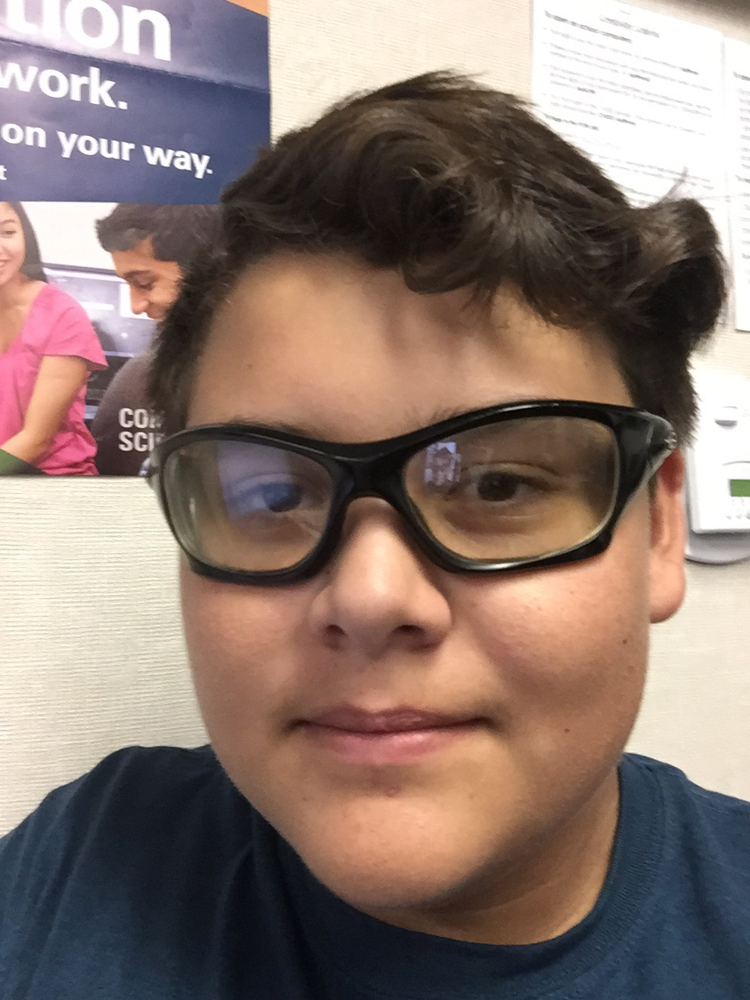
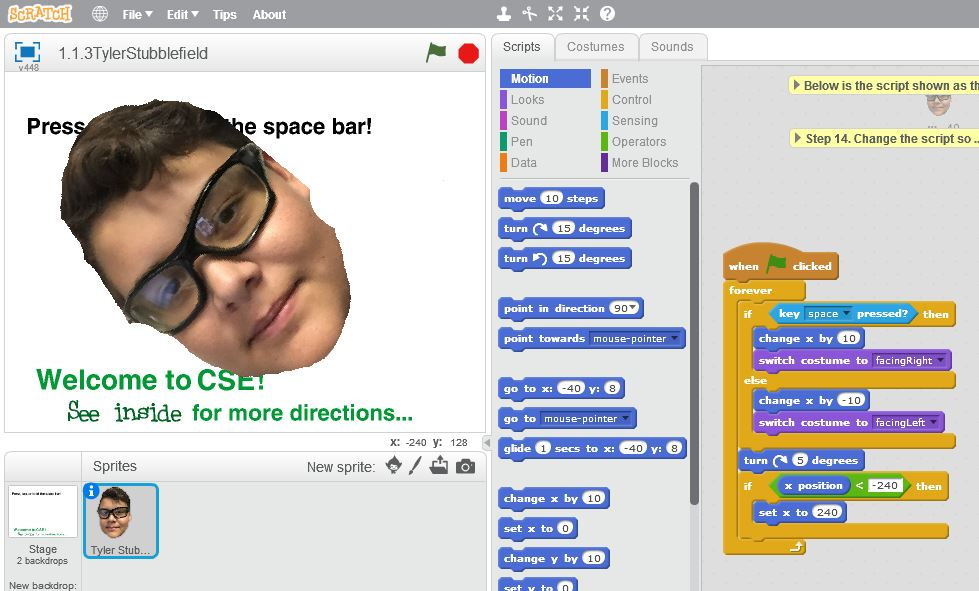
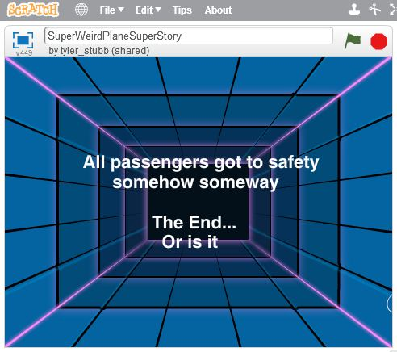
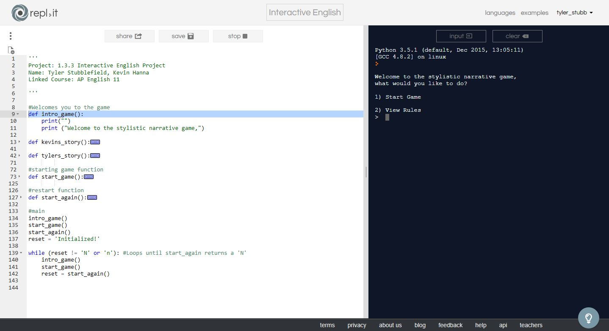
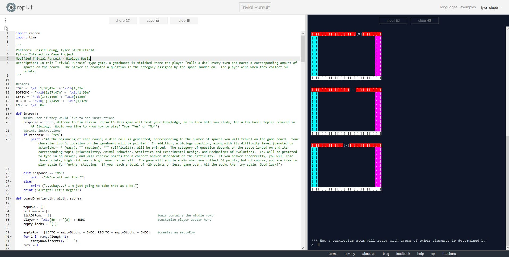
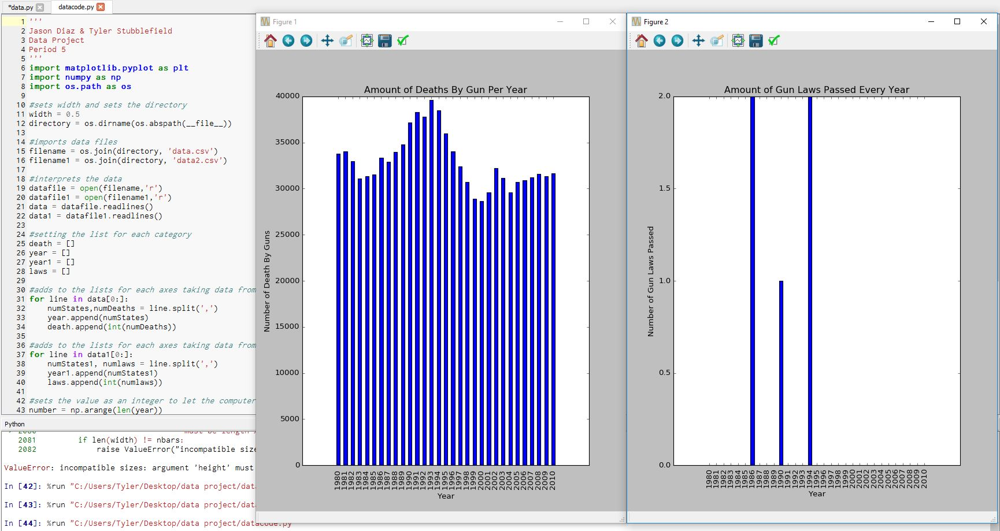

Bio: Welcome to my home page. Im 16 years old and i live in chino california.
I go to Ayala High School. Currently dieing with all 4 AP classes. Some activities I like to do are to play baseball and take photographs. I am half Mexican and half White. Thanks for looking
at my bio mates. Looking foward to a great year of CSP!
Some of the assignments completed during the course of AP CSP




